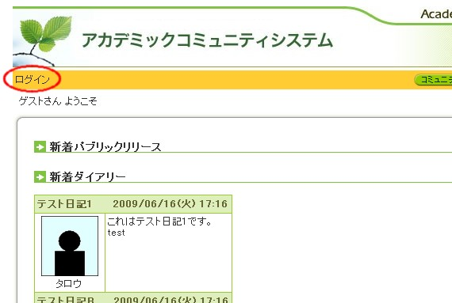
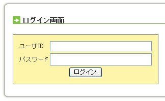
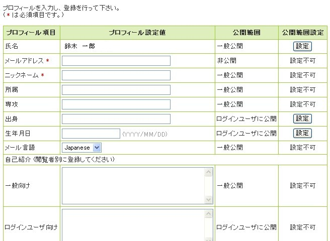
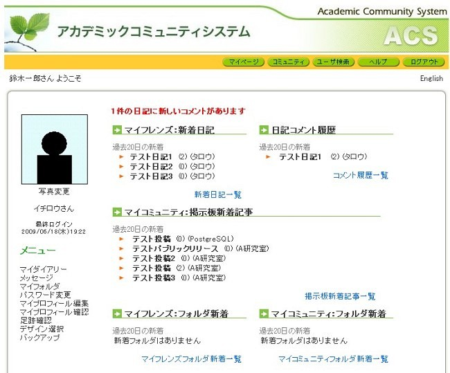

以下はACSに関するFAQ(よくある質問)と、その答えです。
- ACS(Academic Community System)とは？
- ACSでできることは？
- ACSを初めて使うときは？
- マイページとは？
- マイページでできることは？
- 知人・友人をマイフレンズに登録するには？
- コミュニティに参加するには？
- コミュニティにファイルをアップロードするには？
- アップロードされているファイルを更新するには？
ACS(Academic Community System)とは？
ACSは、名古屋大学大学院情報科学研究科で開発された、大学向けのSNS(Social Networking System)です。
SNSとは、Web上で社交場とも呼ばれており、日本ではmixiやGREEなどが有名です。
詳しくは「ソーシャルネットワーキング」を検索してみてください。
ACSの特徴は、招待制ではなく、LDAPの構成員であれば誰でも参加できることや、
ファイル共有の機能を持っていること、友人をグループに整理して、日記やファイルの閲覧の範囲を制限できることなどがあります。
ACSでできることは？
ACSでは以下のようなことが可能です。
- 友人(指導教員、先輩、後輩なども含む)との間でリンクが作れます。
- 日記(Blog)が書けます。
- 他の人の日記が読めます。友人の日記は新着があると教えてくれます。
- 他の人の日記にコメントが書けます。
- フォルダを作ってファイルを保存できます。バージョン管理もできます。
- ファイルを他の人に公開できます。例えば、講義の参考資料を友達と共有できます。
- コミュニティが作成できます。
- コミュニティには、掲示板やフォルダがあり、コミュニティメンバで共有できます。
- コミュニティからパブリックリリースができます。
まだまだ他にもありますが、後は自分で探してみてください。
ACSを初めて使うときは？
ACSを初めて利用される方は、以下の順に操作してください。
http://xxx.yyy.zz.jp/にアクセスします。
ACSのトップページが出ますので、左上にある「ログイン」リンクをクリックします。

ログインウィンドウにユーザIDとパスワードを入力しOKをクリックします。

初めてACSにアクセスすると5のようなページになります。(2回目以降は6に飛びます。)
メールアドレスとニックネームを入力し、「OK」ボタンをクリックします。入力した情報は、後からも変更可能です。

また、個人のプロフィールを書くことができますので、ぜひ記入してください。
マイページが出ます。初めてアクセスした人は、もう少しさびしい画面になると思います。
知り合いを探して、「マイフレンズ」にしたり、興味のあるコミュニティを探したりして、参加してみてはいかがでしょうか？

マイページとは？
ログイン後、初めに表示されるページです。このページがACS上での活動の起点となります。
マイページには、友人の日記や自分が入っているコミュニティの掲示板更新情報など、様々な情報が集約・表示されます。
マイページでできることは？
マイページでは様々なことが可能です。
TOPのリンクは全てのページで共通に表示されるものです。
マイページ
マイページへのリンクです。これを押せばマイページに戻れます。
コミュニティ
コミュニティの検索や作成ができます。
ユーザ検索
システムのユーザを検索することができます。
新着情報
パブリックリリース情報や、ユーザの日記、コミュニティ活動などを見ることができます。
マイページ左側には以下のリンクがあります。
マイダイアリー
日記/Blogを書くことができます。日記は公開範囲を設定可能です。
マイフォルダ
フォルダを作成し、ファイルを置くことができます。自分のフォルダをコミュニティに対して公開することができます。
マイプロフィール編集
自分のプロフィールを編集できます。
マイプロフィール確認
他の人が自分のページを見たとき、プロフィールがどのように表示されるかを確認できます。
なお、他の人のページからは、その人のダイアリーとフォルダにアクセス可能です。
マイページ下側には、以下のリンクがあります。
マイフレンズ一覧
マイフレンズを見ることができます。友人の友人をマイフレンズに追加することや、ユーザ検索で見つけた人に対し「マイフレンズへ追加」ボタンを押すことで、マイフレンズを増やすことができます。
マイフレンズグループ一覧
マイフレンズをグループに分類することができます。このグループを使って、日記やフォルダにアクセス制限をかけることができます。
マイコミュニティ一覧
マイコミュニティの一覧をみることができます。コミュニティは、上のメニューから検索するか、マイフレンズのマイコミュニティから閲覧可能です。
コミュニティによっては、自由に参加できるものや招待制のものがあります。
知人・友人をマイフレンズに登録するには？
友人や知人をマイフレンズに登録する時は、以下の操作を行います。
- 上のメニューの「ユーザ検索」を選び知人・友人の名前や所属を入れて検索してください。
- 検索結果から、知人・友人を選択してください。
- 対象となる人のページが表示されます。ページ中央上にある、「マイフレンズへ追加」ボタンを押してください。
- これで、追加申請が相手に届きます。相手が承認をすれば、相互にマイフレンズとして登録されます。
コミュニティに参加するには？
既存のコミュニティへ参加する場合は、以下の操作を行います。
- 上のメニューの「コミュニティ」を選択します。
- キーワード等で検索して、参加するコミュニティを探してください。
- コミュニティを選択すると、コミュニティのページへジャンプします。そこから、「このコミュニティに参加する」ボタンを押してください。
- これで、対象のコミュニティへ参加することができます。なお、管理者の承認が必要なコミュニティの場合は、管理者が参加を承認するまではコミュニティへの参加処理がされません。
コミュニティにファイルをアップロードするには？
自分が参加しているコミュニティにファイルをアップロードする時は、以下のように操作します。
- マイページ右下から該当コミュニティを選んでください。
- コミュニティページの左側メニューから「コミュニティフォルダ」を選択してください。
- この画面でファイルをダウンロード/アップロードできます。一般的には、まず、フォルダを作ってください。「フォルダ作成」をクリックします。
- フォルダ名を入れて、公開範囲を設定します。
- 作成したフォルダ名をクリックし、フォルダを移動します。その後、「参照」ボタンをクリックしてください。
- アップロードするファイルを選択してください。
- 「アップロード」でファイルを実際に転送します。詳細な情報を登録する場合は「詳細入力」から情報入力できます。
アップロードされているファイルを更新するには？
マイフォルダやコミュニティフォルダ内で、ファイル名の横にある「詳細」を選択すると、ファイルの詳細情報が表示されます。
この画面で、「ファイル更新」を押すと、新たにファイルをアップロード(更新)できます。